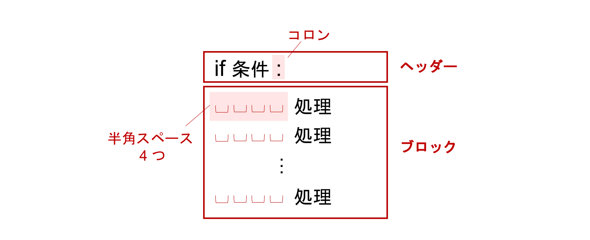
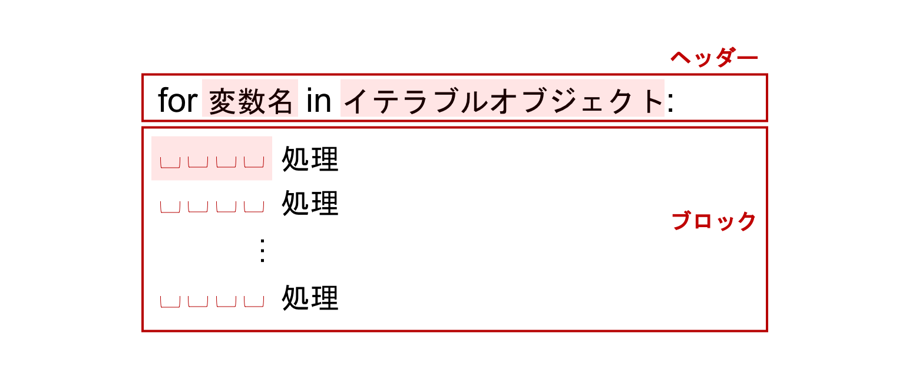
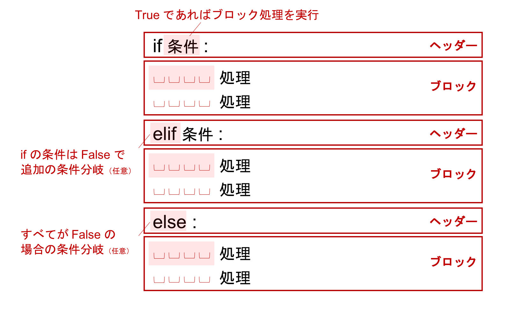
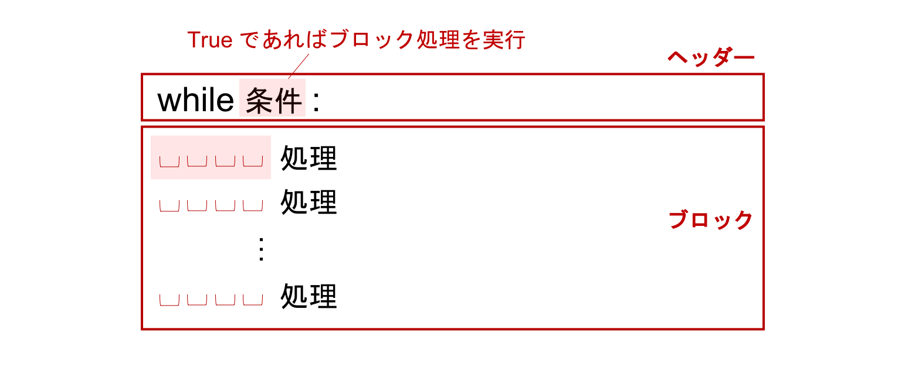

制御構文#
複雑なプログラムを記述しようとすると、繰り返しの処理や、条件によって動作を変える処理が必要となります。 これらは制御構文を用いて記述します。
ここでは最も基本的な制御構文を 2 つ紹介します。
繰り返し (
for,while)条件分岐 (
if)
Python の制御構文は、ヘッダ (header) と ブロック (block) と呼ばれる 2 つの部分で構成されています。 これらを合わせて 複合文 (compound statement) と呼びます。

上図に示すように、制御構文ではヘッダ行に for 文や if-else 句を記述し、行末に : 記号を書きます。次に、ヘッダ行の条件で実行したい一連の処理文を、ブロックとしてその次の行以降に記述していきます。その際、 インデント (indent) と呼ばれる空白文字を先頭に挿入することで、ブロックを表現します。同じ数の空白でインデントされた文がブロックとみなされます。
Python では、インデントとしてスペース 4 つを用いることが推奨されています。
繰り返し （for 文）#
同じ内容のメールを宛名だけ個別に変えて、1000 人に一斉送信したい場合など、繰り返す処理を記述する制御構文である for を使います。

for 文の文法は上図のとおりです。
イテラブルオブジェクト (iterable object) とは、反復可能オブジェクトのことであり、要素を一度に 1 つずつ返せるオブジェクトのことを指します。
range() という組み込み関数を使うと、引数に与えた整数の回数だけ順番に整数を返すイテラブルオブジェクトを作ることができます。
range(5) と書くと、0, 1, 2, 3, 4 という整数 5 つを順番に返すイテラブルオブジェクトになります。
後述しますが、このイテラブルオブジェクトとして、リストやタプルも指定することができます。
# 5回繰り返す
for i in range(5):
print(i)
0
1
2
3
4
上記の例では、イテラブルオブジェクトが1 つずつ返す値を変数 i で受け取っています。
最初は i = 0 から始まっていることに注意してください。
最後の値も、5 ではなく 4 となっています。
このように、range() に 1 つの整数 n を与えた場合は、0 から n - 1 までの整数を順番に返します。
# 繰り返し処理が終わった後の値の確認
i
4
Jupyter Notebook では変数名をコードセルの最後の行に書いて実行するとその変数に代入されている値を確認できましたが、for 文の中のブロックでは明示的に print() を使う必要があります。
print() を用いないと、以下のように何も表示されません。
# 変数の値は表示されない
for i in range(5):
i
for 文を使って、0 から始まって 1 ずつ大きくなっていく整数順に取得し、これをリストのインデックスに利用すれば、リストの各要素に順番にアクセスすることができます。
names = ['佐藤', '鈴木', '高橋']
for i in range(3):
print(names[i])
佐藤
鈴木
高橋
つぎに、さらに汎用性の高いプログラムを目指します。
上記のコードに関して、汎用性が低い点として、range(3) のように 3 という値を直接記述していることが挙げられます。
この 3 はリストの要素の数を意味していますが、リストの要素の数が変わると、このプログラムも書き換える必要があり、手間がかかったり、ミスが発生する原因となったりします。
リスト内の要素の数は、組み込み関数である len() を用いて取得できるため、これを使用した汎用性の高いプログラムに書き換えましょう。
len(names)
3
for i in range(len(names)):
print('{}さん'.format(names[i]))
佐藤さん
鈴木さん
高橋さん
これでリストの要素数に依存しないプログラムにすることができました。
また、リスト自体をイテラブルオブジェクトとして指定することにより、リスト要素数の取得も [] でのインデックス番号の指定もせずに、より可読性の高いプログラムを書くことができます。
# リストをイテラブルオブジェクトに指定
for name in names:
print('{}さん'.format(name))
佐藤さん
鈴木さん
高橋さん
最初のケースと比べていかがでしょうか。
動作は変わりませんが「名簿 (names) から名前 (name) を順に取り出している」ことが伝わりやすくなり、可読性が向上しています。
今回のイテラブルオブジェクトの names は単純な構造でしたが、辞書やリストなどが複雑に組み合わさっている場合は、
このような工夫により可読性を意識することが重要です。
リストをイテラブルオブジェクトとして指定した場合、要素番号を取得できませんが、状況によっては要素番号を使用したいことがあります。
そのような場合は、enumerate() という組み込み関数を使います。
これにイテラブルオブジェクトを渡すと、(要素番号, 要素) というタプルを 1 つずつ返すイテラブルオブジェクトになります。
for i, name in enumerate(names):
message = '{}番目: {}さん'.format(i, name)
print(message)
0番目: 佐藤さん
1番目: 鈴木さん
2番目: 高橋さん
enumerate() と同様、for 文と合わせてよく使う組み込み関数に zip() があります。
zip() は、複数のイテラブルオブジェクトを受け取り、その要素のペアを順番に返すイテラブルオブジェクトを作ります。
このイテラブルオブジェクトは、渡されたイテラブルオブジェクトそれぞれの先頭の要素から順番に、タプルに束ねて返します。
このイテラブルオブジェクトの長さは、渡されたイテラブルオブジェクトのうち最も短い長さと一致します。
names = ['Python', 'Chainer']
versions = ['3.7', '5.3.0']
suffixes = ['!!', '!!', '?']
for name, version, suffix in zip(names, versions, suffixes):
print('{} {} {}'.format(name, version, suffix))
Python 3.7 !!
Chainer 5.3.0 !!
suffixes の要素数は 3 ですが、より短いイテラブルオブジェクトと共に zip に渡されたため、先頭から 2 つ目までしか値が取り出されていません。
条件分岐 （if 文）#
if は、指定した条件が True か False かによって、処理を変えるための制御構文です。

elif と else は任意であり、elif は 1 つだけでなく複数連ねることができます。
例えば、0 より大きいことを条件とした処理を書いてみます。
# if の条件を満たす場合
a = 1
if a > 0:
print('0より大きいです')
else:
print('0以下です')
0より大きいです
# if の条件を満たさない場合
a = -1
if a > 0:
print('0より大きいです')
else:
print('0以下です')
0以下です
また、if に対する条件以外の条件分岐を追加する場合は、下記のように elif を使います。
a = 0
if a > 0:
print('0より大きいです')
elif a == 0:
print('0です')
else:
print('0より小さいです')
0です
繰り返し （while 文）#
繰り返し処理は、for 以外にも while を用いて記述することもできます。
while 文では、以下のようにループを継続する条件を指定します。
指定された条件文が True である限り、ブロックの部分に記述された処理が繰り返し実行されます。

while 文を使用した 3 回繰り返すプログラムは下記のとおりです。
count = 0
while count < 3:
print(count)
count += 1
0
1
2
ここで使われている count という変数は、ループの中身が何回実行されたかを数えるために使われています。
まず 0 で初期化し、ループ内の処理が一度行われるたびに count の値に 1 を足しています。
この count を使った条件式を while 文に与えることで、ループを回したい回数を指定しています。
一方、while True と指定すると、True は変数ではなく値なので、変更されることはなく、ループは無限に回り続けます。
while 文自体は無限ループの状態にしておき、ループの中で if 文を使って、ある条件が満たされた場合はループを中断する、という使い方ができます。
これには break 文が用いられます。
以下は、break 文を使って上のコードと同様に 3 回ループを回すコードです。
count = 0
while True:
print(count)
count += 1
if count == 3:
break
0
1
2
count の値が 3 と等しいかどうかが毎回チェックされ、等しくなっていれば break 文が実行されて while ループが終了します。
while 文を使って、指定された条件を満たしていない間ループを繰り返すという処理も書くことができます。while 文自体の使い方は同じですが、条件を反転して与えることで、与えた条件が False である間繰り返されるようにすることができます。
これには、ブール値を反転する not を用います。
not True は False を返し、not False は True を返します。
not True
False
not False
True
not 1 == 2
True
このように、not はあとに続くブール値を反転します。
これを用いて、count が 3 ではない限りループを繰り返すというコードを while 文を使って書いてみましょう。
count = 0
while not count == 3:
print(count)
count += 1
0
1
2